Note
Click here to download the full example code
Consider Covariance Filter Example
- 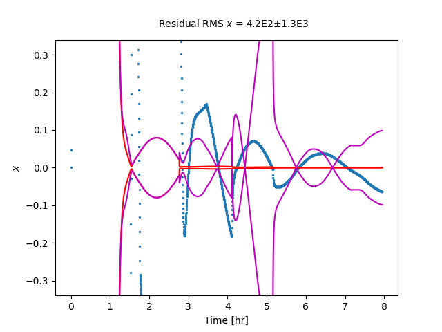
- 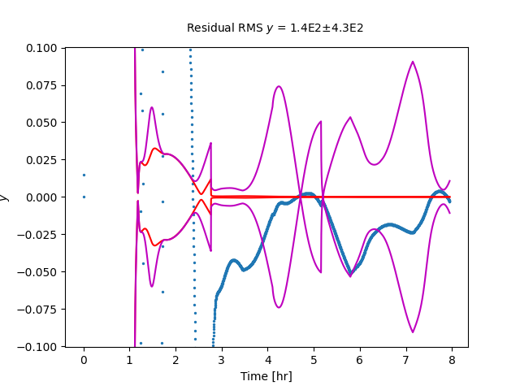
- 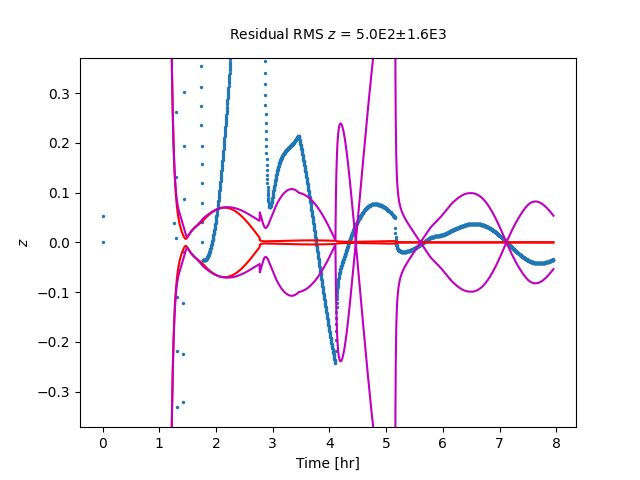
- 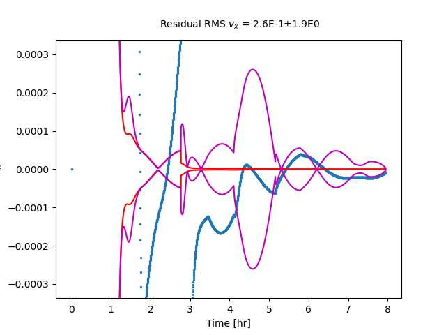
- 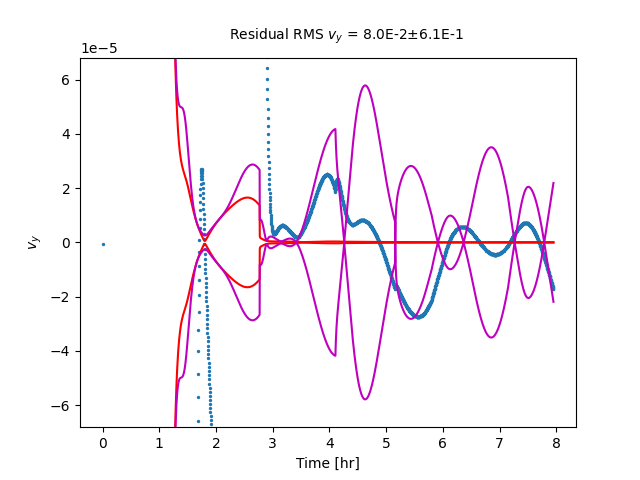
- 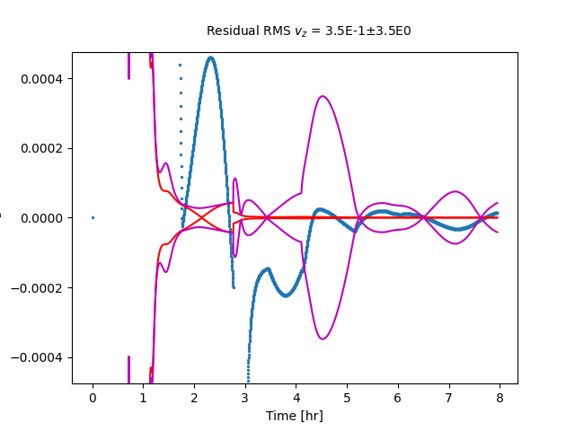
- 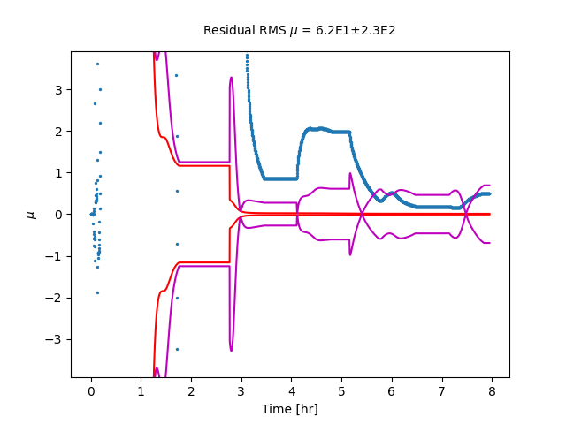
- 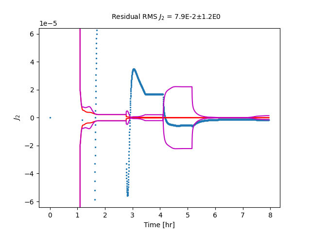
- 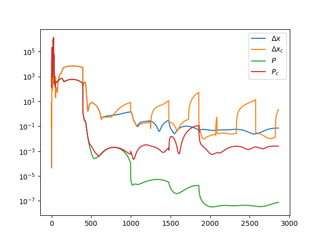
- 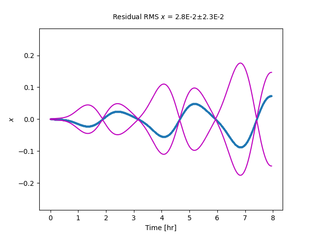
- 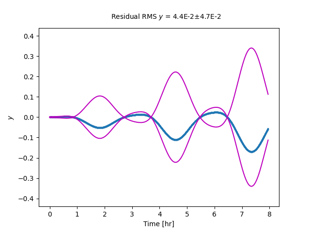
- 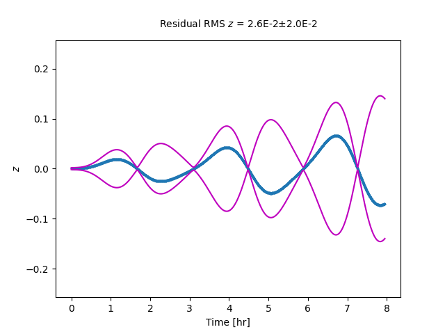
- 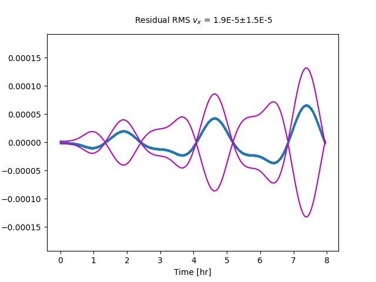
- 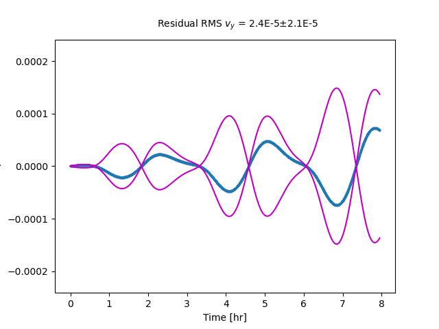
- 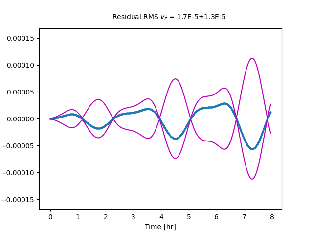
- 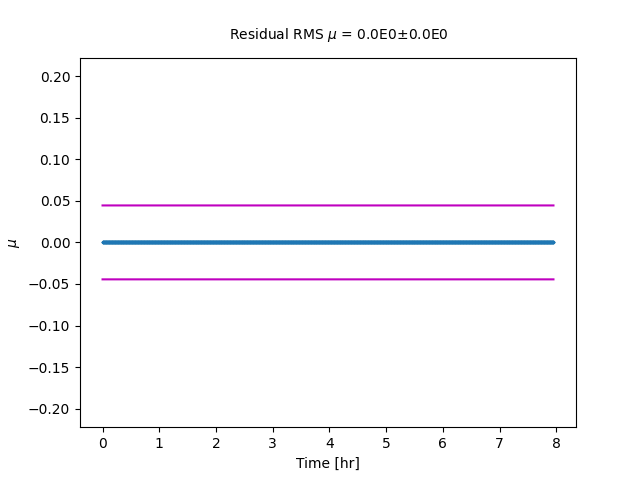
- 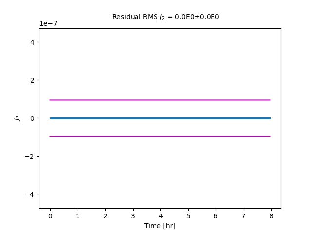
- 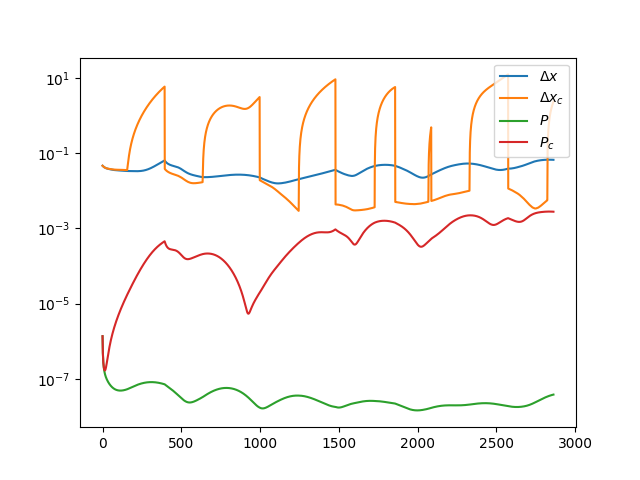
Progress: 0%| | 0/2862 [00:00<?, ?it/s]
Progress: 0%| | 0/2862 [00:11<?, ?it/s]
Progress: 0%| | 14/2862 [00:11<00:20, 137.20it/s]
Progress: 1%|1 | 30/2862 [00:11<00:19, 147.36it/s]
Progress: 2%|1 | 46/2862 [00:11<00:18, 152.40it/s]
Progress: 2%|2 | 63/2862 [00:11<00:17, 155.79it/s]
Progress: 3%|2 | 80/2862 [00:12<00:17, 158.38it/s]
Progress: 3%|3 | 96/2862 [00:12<00:17, 158.55it/s]
Progress: 4%|3 | 112/2862 [00:12<00:17, 154.42it/s]
Progress: 4%|4 | 128/2862 [00:12<00:18, 151.00it/s]
Progress: 5%|5 | 144/2862 [00:12<00:17, 153.45it/s]
Progress: 6%|5 | 161/2862 [00:12<00:17, 157.74it/s]
Progress: 6%|6 | 179/2862 [00:12<00:16, 164.21it/s]
Progress: 7%|6 | 198/2862 [00:12<00:15, 169.14it/s]
Progress: 8%|7 | 216/2862 [00:12<00:15, 170.61it/s]
Progress: 8%|8 | 234/2862 [00:12<00:15, 170.59it/s]
Progress: 9%|8 | 252/2862 [00:13<00:15, 170.81it/s]
Progress: 9%|9 | 270/2862 [00:13<00:15, 171.18it/s]
Progress: 10%|# | 288/2862 [00:13<00:14, 173.52it/s]
Progress: 11%|# | 306/2862 [00:13<00:14, 174.90it/s]
Progress: 11%|#1 | 324/2862 [00:13<00:14, 174.96it/s]
Progress: 12%|#1 | 342/2862 [00:13<00:14, 170.97it/s]
Progress: 13%|#2 | 360/2862 [00:13<00:14, 167.63it/s]
Progress: 13%|#3 | 378/2862 [00:13<00:14, 168.26it/s]
Progress: 14%|#3 | 395/2862 [00:13<00:15, 163.63it/s]
Progress: 14%|#4 | 412/2862 [00:14<00:15, 162.20it/s]
Progress: 15%|#4 | 429/2862 [00:14<00:14, 162.23it/s]
Progress: 16%|#5 | 446/2862 [00:14<00:14, 161.24it/s]
Progress: 16%|#6 | 463/2862 [00:14<00:14, 160.40it/s]
Progress: 17%|#6 | 480/2862 [00:14<00:14, 159.09it/s]
Progress: 17%|#7 | 496/2862 [00:14<00:15, 157.69it/s]
Progress: 18%|#7 | 513/2862 [00:14<00:14, 158.64it/s]
Progress: 19%|#8 | 530/2862 [00:14<00:14, 159.56it/s]
Progress: 19%|#9 | 547/2862 [00:14<00:14, 159.66it/s]
Progress: 20%|#9 | 563/2862 [00:14<00:14, 159.66it/s]
Progress: 20%|## | 579/2862 [00:15<00:14, 159.22it/s]
Progress: 21%|## | 596/2862 [00:15<00:14, 159.99it/s]
Progress: 21%|##1 | 613/2862 [00:15<00:14, 160.63it/s]
Progress: 22%|##2 | 630/2862 [00:15<00:13, 160.40it/s]
Progress: 23%|##2 | 647/2862 [00:15<00:13, 162.29it/s]
Progress: 23%|##3 | 665/2862 [00:15<00:13, 165.77it/s]
Progress: 24%|##3 | 683/2862 [00:15<00:13, 167.39it/s]
Progress: 24%|##4 | 700/2862 [00:15<00:13, 161.05it/s]
Progress: 25%|##5 | 718/2862 [00:15<00:13, 164.42it/s]
Progress: 26%|##5 | 735/2862 [00:16<00:12, 165.96it/s]
Progress: 26%|##6 | 752/2862 [00:16<00:12, 167.09it/s]
Progress: 27%|##6 | 770/2862 [00:16<00:12, 170.01it/s]
Progress: 28%|##7 | 788/2862 [00:16<00:12, 169.80it/s]
Progress: 28%|##8 | 806/2862 [00:16<00:12, 170.94it/s]
Progress: 29%|##8 | 824/2862 [00:16<00:12, 169.44it/s]
Progress: 29%|##9 | 842/2862 [00:16<00:11, 170.10it/s]
Progress: 30%|### | 860/2862 [00:16<00:11, 170.86it/s]
Progress: 31%|### | 878/2862 [00:16<00:11, 171.70it/s]
Progress: 31%|###1 | 896/2862 [00:16<00:11, 171.20it/s]
Progress: 32%|###1 | 914/2862 [00:17<00:11, 169.92it/s]
Progress: 33%|###2 | 931/2862 [00:17<00:11, 169.90it/s]
Progress: 33%|###3 | 948/2862 [00:17<00:11, 169.42it/s]
Progress: 34%|###3 | 965/2862 [00:17<00:11, 167.72it/s]
Progress: 34%|###4 | 982/2862 [00:17<00:11, 163.10it/s]
Progress: 35%|###4 | 999/2862 [00:17<00:11, 164.71it/s]
Progress: 35%|###5 | 1016/2862 [00:17<00:11, 162.86it/s]
Progress: 36%|###6 | 1033/2862 [00:17<00:11, 158.19it/s]
Progress: 37%|###6 | 1049/2862 [00:17<00:11, 153.09it/s]
Progress: 37%|###7 | 1065/2862 [00:18<00:11, 154.79it/s]
Progress: 38%|###7 | 1081/2862 [00:18<00:11, 155.20it/s]
Progress: 38%|###8 | 1098/2862 [00:18<00:11, 158.44it/s]
Progress: 39%|###8 | 1115/2862 [00:18<00:10, 161.17it/s]
Progress: 40%|###9 | 1132/2862 [00:18<00:10, 163.13it/s]
Progress: 40%|#### | 1149/2862 [00:18<00:10, 161.94it/s]
Progress: 41%|#### | 1166/2862 [00:18<00:10, 156.48it/s]
Progress: 41%|####1 | 1183/2862 [00:18<00:10, 159.64it/s]
Progress: 42%|####1 | 1200/2862 [00:18<00:10, 159.72it/s]
Progress: 43%|####2 | 1217/2862 [00:18<00:10, 159.74it/s]
Progress: 43%|####3 | 1234/2862 [00:19<00:10, 158.49it/s]
Progress: 44%|####3 | 1251/2862 [00:19<00:10, 159.60it/s]
Progress: 44%|####4 | 1269/2862 [00:19<00:09, 164.25it/s]
Progress: 45%|####4 | 1286/2862 [00:19<00:09, 165.76it/s]
Progress: 46%|####5 | 1304/2862 [00:19<00:09, 168.34it/s]
Progress: 46%|####6 | 1321/2862 [00:19<00:09, 168.29it/s]
Progress: 47%|####6 | 1339/2862 [00:19<00:08, 171.03it/s]
Progress: 47%|####7 | 1357/2862 [00:19<00:08, 170.31it/s]
Progress: 48%|####8 | 1375/2862 [00:19<00:08, 169.75it/s]
Progress: 49%|####8 | 1392/2862 [00:20<00:08, 167.73it/s]
Progress: 49%|####9 | 1409/2862 [00:20<00:08, 167.49it/s]
Progress: 50%|####9 | 1426/2862 [00:20<00:08, 167.18it/s]
Progress: 50%|##### | 1443/2862 [00:20<00:08, 166.07it/s]
Progress: 51%|#####1 | 1460/2862 [00:20<00:08, 165.63it/s]
Progress: 52%|#####1 | 1477/2862 [00:20<00:08, 164.88it/s]
Progress: 52%|#####2 | 1494/2862 [00:20<00:08, 161.21it/s]
Progress: 53%|#####2 | 1511/2862 [00:20<00:08, 161.27it/s]
Progress: 53%|#####3 | 1528/2862 [00:20<00:08, 160.58it/s]
Progress: 54%|#####3 | 1545/2862 [00:20<00:08, 160.45it/s]
Progress: 55%|#####4 | 1562/2862 [00:21<00:08, 160.07it/s]
Progress: 55%|#####5 | 1579/2862 [00:21<00:08, 158.65it/s]
Progress: 56%|#####5 | 1596/2862 [00:21<00:07, 160.74it/s]
Progress: 56%|#####6 | 1613/2862 [00:21<00:07, 162.30it/s]
Progress: 57%|#####6 | 1631/2862 [00:21<00:07, 164.95it/s]
Progress: 58%|#####7 | 1648/2862 [00:21<00:07, 162.54it/s]
Progress: 58%|#####8 | 1665/2862 [00:21<00:07, 161.75it/s]
Progress: 59%|#####8 | 1682/2862 [00:21<00:07, 163.17it/s]
Progress: 59%|#####9 | 1699/2862 [00:21<00:07, 162.78it/s]
Progress: 60%|#####9 | 1716/2862 [00:22<00:07, 160.56it/s]
Progress: 61%|###### | 1733/2862 [00:22<00:07, 158.22it/s]
Progress: 61%|######1 | 1750/2862 [00:22<00:06, 161.13it/s]
Progress: 62%|######1 | 1767/2862 [00:22<00:06, 163.04it/s]
Progress: 62%|######2 | 1784/2862 [00:22<00:06, 164.81it/s]
Progress: 63%|######2 | 1801/2862 [00:22<00:06, 165.05it/s]
Progress: 64%|######3 | 1818/2862 [00:22<00:06, 162.76it/s]
Progress: 64%|######4 | 1835/2862 [00:22<00:06, 163.19it/s]
Progress: 65%|######4 | 1852/2862 [00:22<00:06, 163.74it/s]
Progress: 65%|######5 | 1869/2862 [00:22<00:06, 164.28it/s]
Progress: 66%|######5 | 1886/2862 [00:23<00:06, 162.33it/s]
Progress: 66%|######6 | 1903/2862 [00:23<00:05, 162.11it/s]
Progress: 67%|######7 | 1920/2862 [00:23<00:05, 163.53it/s]
Progress: 68%|######7 | 1937/2862 [00:23<00:05, 161.18it/s]
Progress: 68%|######8 | 1954/2862 [00:23<00:05, 158.50it/s]
Progress: 69%|######8 | 1970/2862 [00:23<00:05, 156.18it/s]
Progress: 69%|######9 | 1986/2862 [00:23<00:05, 155.47it/s]
Progress: 70%|######9 | 2003/2862 [00:23<00:05, 157.09it/s]
Progress: 71%|####### | 2020/2862 [00:23<00:05, 159.60it/s]
Progress: 71%|#######1 | 2037/2862 [00:24<00:05, 162.26it/s]
Progress: 72%|#######1 | 2054/2862 [00:24<00:05, 156.29it/s]
Progress: 72%|#######2 | 2070/2862 [00:24<00:05, 156.82it/s]
Progress: 73%|#######2 | 2087/2862 [00:24<00:04, 160.51it/s]
Progress: 74%|#######3 | 2104/2862 [00:24<00:04, 159.98it/s]
Progress: 74%|#######4 | 2121/2862 [00:24<00:04, 159.73it/s]
Progress: 75%|#######4 | 2137/2862 [00:24<00:04, 159.72it/s]
Progress: 75%|#######5 | 2154/2862 [00:24<00:04, 162.07it/s]
Progress: 76%|#######5 | 2171/2862 [00:24<00:04, 161.23it/s]
Progress: 76%|#######6 | 2188/2862 [00:24<00:04, 160.96it/s]
Progress: 77%|#######7 | 2205/2862 [00:25<00:04, 160.81it/s]
Progress: 78%|#######7 | 2222/2862 [00:25<00:04, 155.75it/s]
Progress: 78%|#######8 | 2238/2862 [00:25<00:03, 156.07it/s]
Progress: 79%|#######8 | 2254/2862 [00:25<00:03, 156.69it/s]
Progress: 79%|#######9 | 2271/2862 [00:25<00:03, 158.79it/s]
Progress: 80%|#######9 | 2287/2862 [00:25<00:03, 158.87it/s]
Progress: 81%|######## | 2304/2862 [00:25<00:03, 159.26it/s]
Progress: 81%|########1 | 2321/2862 [00:25<00:03, 159.87it/s]
Progress: 82%|########1 | 2338/2862 [00:25<00:03, 161.27it/s]
Progress: 82%|########2 | 2356/2862 [00:25<00:03, 165.03it/s]
Progress: 83%|########2 | 2374/2862 [00:26<00:02, 167.34it/s]
Progress: 84%|########3 | 2391/2862 [00:26<00:02, 163.23it/s]
Progress: 84%|########4 | 2408/2862 [00:26<00:02, 161.32it/s]
Progress: 85%|########4 | 2426/2862 [00:26<00:02, 165.49it/s]
Progress: 85%|########5 | 2444/2862 [00:26<00:02, 169.14it/s]
Progress: 86%|########5 | 2461/2862 [00:26<00:02, 168.81it/s]
Progress: 87%|########6 | 2479/2862 [00:26<00:02, 169.93it/s]
Progress: 87%|########7 | 2497/2862 [00:26<00:02, 169.39it/s]
Progress: 88%|########7 | 2514/2862 [00:26<00:02, 169.46it/s]
Progress: 88%|########8 | 2532/2862 [00:27<00:01, 169.96it/s]
Progress: 89%|########9 | 2549/2862 [00:27<00:01, 169.96it/s]
Progress: 90%|########9 | 2566/2862 [00:27<00:01, 169.21it/s]
Progress: 90%|######### | 2583/2862 [00:27<00:01, 166.95it/s]
Progress: 91%|######### | 2600/2862 [00:27<00:01, 162.27it/s]
Progress: 91%|#########1| 2617/2862 [00:27<00:01, 160.51it/s]
Progress: 92%|#########2| 2634/2862 [00:27<00:01, 156.98it/s]
Progress: 93%|#########2| 2650/2862 [00:27<00:01, 152.37it/s]
Progress: 93%|#########3| 2666/2862 [00:27<00:01, 154.08it/s]
Progress: 94%|#########3| 2683/2862 [00:28<00:01, 156.94it/s]
Progress: 94%|#########4| 2700/2862 [00:28<00:01, 157.04it/s]
Progress: 95%|#########4| 2717/2862 [00:28<00:00, 158.13it/s]
Progress: 96%|#########5| 2734/2862 [00:28<00:00, 158.76it/s]
Progress: 96%|#########6| 2751/2862 [00:28<00:00, 159.49it/s]
Progress: 97%|#########6| 2767/2862 [00:28<00:00, 158.94it/s]
Progress: 97%|#########7| 2783/2862 [00:28<00:00, 157.24it/s]
Progress: 98%|#########7| 2799/2862 [00:28<00:00, 154.82it/s]
Progress: 98%|#########8| 2816/2862 [00:28<00:00, 156.81it/s]
Progress: 99%|#########9| 2834/2862 [00:28<00:00, 161.42it/s]
Progress: 100%|#########9| 2852/2862 [00:29<00:00, 165.40it/s]
Progress: 100%|##########| 2862/2862 [00:29<00:00, 98.31it/s]
Time Elapsed: 29.116612672805786
/github/workspace/StatOD/visualizations.py:456: RuntimeWarning: invalid value encountered in sqrt
cov = np.sqrt(covariances[:,i,i])
/github/workspace/StatOD/visualizations.py:463: RuntimeWarning: invalid value encountered in sqrt
cov = np.sqrt(consider_covariances[:,i,i])
dx is [-5.02258858e-02 -3.61130168e-02 -7.02452070e-04 5.03495376e-06
-2.45143308e-05 -6.38369984e-06 -5.05330695e-01 1.55460429e-06]
P0_new is [[ 3.12520047e-05 9.55906184e-05 7.12596268e-05 9.94510098e-08
8.19108327e-09 4.01850851e-08 1.93370256e-03 -4.01285995e-09
-8.99203292e-09]
[ 9.55909997e-05 2.92911595e-04 2.18234032e-04 3.04861111e-07
2.50526489e-08 1.23228072e-07 5.92381189e-03 -1.22883691e-08
-2.75544679e-08]
[ 7.12587499e-05 2.18233761e-04 1.62642309e-04 2.27123006e-07
1.86701431e-08 9.17962838e-08 4.41411108e-03 -9.15754305e-09
-2.05297766e-08]
[ 9.94510335e-08 3.04861317e-07 2.27122549e-07 3.17343127e-10
2.60589770e-11 1.28288278e-10 6.16519262e-06 -1.27879642e-11
-2.86792293e-11]
[ 8.19131408e-09 2.50525507e-08 1.86705329e-08 2.60588463e-11
2.14909336e-12 1.05279379e-11 5.06693656e-07 -1.05169911e-12
-2.35651413e-12]
[ 4.01854455e-08 1.23228232e-07 9.17961711e-08 1.28288093e-10
1.05281277e-11 5.18705518e-11 2.49201601e-06 -5.16820238e-12
-1.15924457e-11]
[ 1.93370175e-03 5.92381009e-03 4.41411464e-03 6.16519294e-06
5.06692358e-07 2.49201465e-06 1.19819386e-01 -2.48540430e-07
-5.57253849e-07]
[-4.01283494e-09 -1.22883512e-08 -9.15756626e-09 -1.27879766e-11
-1.05168188e-12 -5.16819605e-12 -2.48540350e-07 5.15679420e-13
1.15598179e-12]
[-8.99203292e-09 -2.75544679e-08 -2.05297766e-08 -2.86792293e-11
-2.35651413e-12 -1.15924457e-11 -5.57253849e-07 1.15598179e-12
2.59210000e-12]]
Progress: 0%| | 0/2862 [00:00<?, ?it/s]
Progress: 1%| | 17/2862 [00:00<00:17, 162.78it/s]
Progress: 1%|1 | 34/2862 [00:00<00:17, 163.99it/s]
Progress: 2%|1 | 51/2862 [00:00<00:17, 161.00it/s]
Progress: 2%|2 | 68/2862 [00:00<00:17, 163.06it/s]
Progress: 3%|3 | 86/2862 [00:00<00:16, 166.20it/s]
Progress: 4%|3 | 103/2862 [00:00<00:16, 165.04it/s]
Progress: 4%|4 | 120/2862 [00:00<00:16, 164.47it/s]
Progress: 5%|4 | 137/2862 [00:00<00:16, 164.00it/s]
Progress: 5%|5 | 154/2862 [00:00<00:16, 162.39it/s]
Progress: 6%|6 | 172/2862 [00:01<00:16, 164.36it/s]
Progress: 7%|6 | 190/2862 [00:01<00:15, 167.26it/s]
Progress: 7%|7 | 208/2862 [00:01<00:15, 169.18it/s]
Progress: 8%|7 | 225/2862 [00:01<00:15, 168.26it/s]
Progress: 8%|8 | 242/2862 [00:01<00:16, 163.06it/s]
Progress: 9%|9 | 259/2862 [00:01<00:15, 164.96it/s]
Progress: 10%|9 | 277/2862 [00:01<00:15, 166.76it/s]
Progress: 10%|# | 295/2862 [00:01<00:15, 170.08it/s]
Progress: 11%|# | 313/2862 [00:01<00:14, 170.77it/s]
Progress: 12%|#1 | 331/2862 [00:01<00:14, 171.61it/s]
Progress: 12%|#2 | 349/2862 [00:02<00:14, 172.03it/s]
Progress: 13%|#2 | 367/2862 [00:02<00:14, 173.07it/s]
Progress: 13%|#3 | 385/2862 [00:02<00:14, 174.44it/s]
Progress: 14%|#4 | 403/2862 [00:02<00:14, 172.65it/s]
Progress: 15%|#4 | 421/2862 [00:02<00:14, 170.87it/s]
Progress: 15%|#5 | 439/2862 [00:02<00:14, 167.01it/s]
Progress: 16%|#5 | 456/2862 [00:02<00:14, 164.78it/s]
Progress: 17%|#6 | 473/2862 [00:02<00:14, 163.19it/s]
Progress: 17%|#7 | 490/2862 [00:02<00:14, 161.53it/s]
Progress: 18%|#7 | 507/2862 [00:03<00:14, 162.95it/s]
Progress: 18%|#8 | 524/2862 [00:03<00:14, 161.92it/s]
Progress: 19%|#8 | 541/2862 [00:03<00:14, 162.09it/s]
Progress: 19%|#9 | 558/2862 [00:03<00:14, 160.88it/s]
Progress: 20%|## | 575/2862 [00:03<00:14, 160.03it/s]
Progress: 21%|## | 592/2862 [00:03<00:14, 157.75it/s]
Progress: 21%|##1 | 608/2862 [00:03<00:14, 157.17it/s]
Progress: 22%|##1 | 624/2862 [00:03<00:14, 157.58it/s]
Progress: 22%|##2 | 640/2862 [00:03<00:14, 158.21it/s]
Progress: 23%|##2 | 656/2862 [00:03<00:13, 158.51it/s]
Progress: 24%|##3 | 674/2862 [00:04<00:13, 162.40it/s]
Progress: 24%|##4 | 692/2862 [00:04<00:13, 165.25it/s]
Progress: 25%|##4 | 709/2862 [00:04<00:12, 165.86it/s]
Progress: 25%|##5 | 727/2862 [00:04<00:12, 167.14it/s]
Progress: 26%|##6 | 745/2862 [00:04<00:12, 168.31it/s]
Progress: 27%|##6 | 763/2862 [00:04<00:12, 168.05it/s]
Progress: 27%|##7 | 780/2862 [00:04<00:12, 168.03it/s]
Progress: 28%|##7 | 797/2862 [00:04<00:12, 168.00it/s]
Progress: 28%|##8 | 814/2862 [00:04<00:12, 167.46it/s]
Progress: 29%|##9 | 831/2862 [00:05<00:12, 166.62it/s]
Progress: 30%|##9 | 848/2862 [00:05<00:12, 165.32it/s]
Progress: 30%|### | 866/2862 [00:05<00:11, 167.44it/s]
Progress: 31%|### | 884/2862 [00:05<00:11, 169.45it/s]
Progress: 32%|###1 | 902/2862 [00:05<00:11, 172.10it/s]
Progress: 32%|###2 | 920/2862 [00:05<00:11, 172.44it/s]
Progress: 33%|###2 | 938/2862 [00:05<00:11, 167.28it/s]
Progress: 33%|###3 | 955/2862 [00:05<00:11, 167.66it/s]
Progress: 34%|###3 | 972/2862 [00:05<00:11, 167.58it/s]
Progress: 35%|###4 | 989/2862 [00:05<00:11, 167.48it/s]
Progress: 35%|###5 | 1006/2862 [00:06<00:11, 166.37it/s]
Progress: 36%|###5 | 1023/2862 [00:06<00:11, 163.29it/s]
Progress: 36%|###6 | 1040/2862 [00:06<00:11, 161.07it/s]
Progress: 37%|###6 | 1057/2862 [00:06<00:11, 158.72it/s]
Progress: 37%|###7 | 1073/2862 [00:06<00:11, 157.79it/s]
Progress: 38%|###8 | 1089/2862 [00:06<00:11, 156.83it/s]
Progress: 39%|###8 | 1105/2862 [00:06<00:11, 157.48it/s]
Progress: 39%|###9 | 1122/2862 [00:06<00:10, 160.61it/s]
Progress: 40%|###9 | 1140/2862 [00:06<00:10, 164.30it/s]
Progress: 40%|#### | 1157/2862 [00:07<00:10, 165.15it/s]
Progress: 41%|####1 | 1174/2862 [00:07<00:10, 166.05it/s]
Progress: 42%|####1 | 1191/2862 [00:07<00:10, 164.66it/s]
Progress: 42%|####2 | 1208/2862 [00:07<00:10, 163.28it/s]
Progress: 43%|####2 | 1225/2862 [00:07<00:10, 158.69it/s]
Progress: 43%|####3 | 1241/2862 [00:07<00:10, 158.98it/s]
Progress: 44%|####3 | 1259/2862 [00:07<00:09, 163.51it/s]
Progress: 45%|####4 | 1277/2862 [00:07<00:09, 166.77it/s]
Progress: 45%|####5 | 1296/2862 [00:07<00:09, 170.81it/s]
Progress: 46%|####5 | 1314/2862 [00:07<00:09, 170.80it/s]
Progress: 47%|####6 | 1332/2862 [00:08<00:09, 168.74it/s]
Progress: 47%|####7 | 1350/2862 [00:08<00:08, 170.68it/s]
Progress: 48%|####7 | 1368/2862 [00:08<00:08, 171.41it/s]
Progress: 48%|####8 | 1386/2862 [00:08<00:08, 170.80it/s]
Progress: 49%|####9 | 1404/2862 [00:08<00:08, 171.24it/s]
Progress: 50%|####9 | 1423/2862 [00:08<00:08, 173.99it/s]
Progress: 50%|##### | 1441/2862 [00:08<00:08, 174.31it/s]
Progress: 51%|##### | 1459/2862 [00:08<00:08, 172.52it/s]
Progress: 52%|#####1 | 1477/2862 [00:08<00:08, 172.05it/s]
Progress: 52%|#####2 | 1495/2862 [00:09<00:08, 169.06it/s]
Progress: 53%|#####2 | 1512/2862 [00:09<00:08, 165.10it/s]
Progress: 53%|#####3 | 1529/2862 [00:09<00:08, 164.99it/s]
Progress: 54%|#####4 | 1546/2862 [00:09<00:07, 164.58it/s]
Progress: 55%|#####4 | 1563/2862 [00:09<00:07, 164.71it/s]
Progress: 55%|#####5 | 1580/2862 [00:09<00:07, 163.59it/s]
Progress: 56%|#####5 | 1597/2862 [00:09<00:07, 163.61it/s]
Progress: 56%|#####6 | 1614/2862 [00:09<00:07, 163.64it/s]
Progress: 57%|#####6 | 1631/2862 [00:09<00:07, 163.79it/s]
Progress: 58%|#####7 | 1648/2862 [00:09<00:07, 163.09it/s]
Progress: 58%|#####8 | 1665/2862 [00:10<00:07, 162.61it/s]
Progress: 59%|#####8 | 1682/2862 [00:10<00:07, 162.84it/s]
Progress: 59%|#####9 | 1699/2862 [00:10<00:07, 162.87it/s]
Progress: 60%|#####9 | 1716/2862 [00:10<00:07, 162.49it/s]
Progress: 61%|###### | 1733/2862 [00:10<00:06, 162.93it/s]
Progress: 61%|######1 | 1751/2862 [00:10<00:06, 166.25it/s]
Progress: 62%|######1 | 1769/2862 [00:10<00:06, 168.44it/s]
Progress: 62%|######2 | 1787/2862 [00:10<00:06, 169.83it/s]
Progress: 63%|######3 | 1805/2862 [00:10<00:06, 170.51it/s]
Progress: 64%|######3 | 1823/2862 [00:10<00:06, 169.99it/s]
Progress: 64%|######4 | 1841/2862 [00:11<00:05, 170.34it/s]
Progress: 65%|######4 | 1859/2862 [00:11<00:05, 170.74it/s]
Progress: 66%|######5 | 1877/2862 [00:11<00:05, 168.50it/s]
Progress: 66%|######6 | 1894/2862 [00:11<00:05, 164.05it/s]
Progress: 67%|######6 | 1911/2862 [00:11<00:05, 163.05it/s]
Progress: 67%|######7 | 1929/2862 [00:11<00:05, 165.76it/s]
Progress: 68%|######7 | 1946/2862 [00:11<00:05, 164.55it/s]
Progress: 69%|######8 | 1963/2862 [00:11<00:05, 158.22it/s]
Progress: 69%|######9 | 1979/2862 [00:11<00:05, 156.01it/s]
Progress: 70%|######9 | 1995/2862 [00:12<00:05, 156.39it/s]
Progress: 70%|####### | 2012/2862 [00:12<00:05, 157.50it/s]
Progress: 71%|####### | 2028/2862 [00:12<00:05, 158.03it/s]
Progress: 71%|#######1 | 2044/2862 [00:12<00:05, 157.77it/s]
Progress: 72%|#######1 | 2060/2862 [00:12<00:05, 158.18it/s]
Progress: 73%|#######2 | 2078/2862 [00:12<00:04, 162.22it/s]
Progress: 73%|#######3 | 2095/2862 [00:12<00:04, 163.96it/s]
Progress: 74%|#######3 | 2112/2862 [00:12<00:04, 161.57it/s]
Progress: 74%|#######4 | 2129/2862 [00:12<00:04, 160.72it/s]
Progress: 75%|#######4 | 2146/2862 [00:13<00:04, 160.28it/s]
Progress: 76%|#######5 | 2163/2862 [00:13<00:04, 158.84it/s]
Progress: 76%|#######6 | 2179/2862 [00:13<00:04, 158.78it/s]
Progress: 77%|#######6 | 2195/2862 [00:13<00:04, 158.92it/s]
Progress: 77%|#######7 | 2211/2862 [00:13<00:04, 158.60it/s]
Progress: 78%|#######7 | 2227/2862 [00:13<00:04, 158.72it/s]
Progress: 78%|#######8 | 2243/2862 [00:13<00:03, 158.06it/s]
Progress: 79%|#######8 | 2259/2862 [00:13<00:03, 158.58it/s]
Progress: 80%|#######9 | 2276/2862 [00:13<00:03, 160.13it/s]
Progress: 80%|######## | 2293/2862 [00:13<00:03, 161.05it/s]
Progress: 81%|######## | 2310/2862 [00:14<00:03, 156.40it/s]
Progress: 81%|########1 | 2326/2862 [00:14<00:03, 148.12it/s]
Progress: 82%|########1 | 2343/2862 [00:14<00:03, 152.36it/s]
Progress: 82%|########2 | 2361/2862 [00:14<00:03, 158.26it/s]
Progress: 83%|########3 | 2379/2862 [00:14<00:02, 162.82it/s]
Progress: 84%|########3 | 2396/2862 [00:14<00:02, 164.60it/s]
Progress: 84%|########4 | 2413/2862 [00:14<00:02, 162.00it/s]
Progress: 85%|########4 | 2431/2862 [00:14<00:02, 166.00it/s]
Progress: 86%|########5 | 2449/2862 [00:14<00:02, 168.95it/s]
Progress: 86%|########6 | 2466/2862 [00:14<00:02, 168.56it/s]
Progress: 87%|########6 | 2483/2862 [00:15<00:02, 168.98it/s]
Progress: 87%|########7 | 2500/2862 [00:15<00:02, 168.69it/s]
Progress: 88%|########7 | 2517/2862 [00:15<00:02, 169.00it/s]
Progress: 89%|########8 | 2534/2862 [00:15<00:01, 168.99it/s]
Progress: 89%|########9 | 2552/2862 [00:15<00:01, 170.43it/s]
Progress: 90%|########9 | 2570/2862 [00:15<00:01, 170.42it/s]
Progress: 90%|######### | 2588/2862 [00:15<00:01, 168.07it/s]
Progress: 91%|#########1| 2605/2862 [00:15<00:01, 165.01it/s]
Progress: 92%|#########1| 2622/2862 [00:15<00:01, 163.62it/s]
Progress: 92%|#########2| 2639/2862 [00:16<00:01, 162.03it/s]
Progress: 93%|#########2| 2656/2862 [00:16<00:01, 156.11it/s]
Progress: 93%|#########3| 2673/2862 [00:16<00:01, 157.82it/s]
Progress: 94%|#########3| 2690/2862 [00:16<00:01, 159.48it/s]
Progress: 95%|#########4| 2707/2862 [00:16<00:00, 159.88it/s]
Progress: 95%|#########5| 2724/2862 [00:16<00:00, 160.07it/s]
Progress: 96%|#########5| 2741/2862 [00:16<00:00, 158.01it/s]
Progress: 96%|#########6| 2758/2862 [00:16<00:00, 159.17it/s]
Progress: 97%|#########6| 2775/2862 [00:16<00:00, 160.38it/s]
Progress: 98%|#########7| 2792/2862 [00:17<00:00, 159.92it/s]
Progress: 98%|#########8| 2809/2862 [00:17<00:00, 158.35it/s]
Progress: 99%|#########8| 2825/2862 [00:17<00:00, 158.74it/s]
Progress: 99%|#########9| 2843/2862 [00:17<00:00, 163.09it/s]
Progress: 100%|#########9| 2861/2862 [00:17<00:00, 167.00it/s]
Progress: 100%|##########| 2862/2862 [00:17<00:00, 164.27it/s]
/usr/local/lib/python3.8/site-packages/sigfig/sigfig.py:586: UserWarning: warning: 2 significant figures requested from number with only 1 significant figures
warn("warning: %d significant figures requested from number with only %d significant figures" % (given['sigfigs'], len(num.map)))
6 7 8 9 10 11 12 13 14 15 16 17 18 19 20 21 22 23 24 25 26 27 28 29 30 31 32 33 34 35 36 37 38 39 40 41 42 43 44 45 46 47 48 49 50 51 52 53 54 55 56 57 58 59 60 61 62 63 64 65 66 67 68 69 70 71 72 73 74 75 76 77 78 79 80 81 82 83 84 85 86 87 88 89 90 91 92 93 94 95 96 97 98 99 100 101 102 103 104 105 106 107 108 109 110 111 112 113 114 115 116 117 118 119 120 121 122 123 124 125 126 127 128 129 130 131 132 133 134 135 136 137 138 139 140 141 142 143 144 145 146 147 148 149 150 151 152 153 154 155 156 157 158 159 160 161 162 163 164 165 166 167 168 169 170 171 172 173 174 175 176 177 178 179 180 181 182 183 184 185 186 187 188 189 190 191 192 193 194 195 196 197 198 199 200 201 202 203 204 205 206 207 208 209 210 211 212 213 214 215 216 217 218 219 220 221 222 223 224 225 226 227 228 229 230 231 232 233 234 235 236 237 238 239 240 241 242 243 244 245 246 | import os
import sys
import time
import copy
import matplotlib.pyplot as plt
import numpy as np
from scipy.integrate import solve_ivp
from StatOD.data import get_measurements
from StatOD.dynamics import *
from StatOD.filters import FilterLogger, SequentialConsiderCovarianceFilter
from StatOD.measurements import *
from StatOD.rotations import ECI_2_RCI
from StatOD.utils import ECEF_2_ECI, latlon2cart
from StatOD.visualizations import *
from StatOD.constants import *
def get_true_trajectory(t, mu, R, cart_state, include_J3=False):
from StatOD.dynamics import dynamics, f_J3
from scipy.integrate import solve_ivp
J2 = 0.001082626925638815
J3 = -1.61 * 10 ** -6
f_J3_args = np.array([R, mu, J2, J3])
f_J3_fcn, dfdx_J3 = dynamics(cart_state, f_J3, f_J3_args)
init_sol = solve_ivp(
lambda t, x: f_J3_fcn(x, f_J3_args),
[0, t[-1]],
cart_state,
atol=1e-14,
rtol=2.23e-14,
t_eval=t,
method="RK45",
)
x_original = init_sol.y.T
if include_J3:
x_original = np.hstack((x_original, np.ones((len(x_original),1))*mu, np.ones((len(x_original),1))*J2, np.ones((len(x_original),1))*J3))
else:
x_original = np.hstack((x_original, np.ones((len(x_original),1))*mu, np.ones((len(x_original),1))*J2))
return x_original
def main():
######################
## Get Measurements ##
######################
ep = EarthParams()
cart_state = np.array([-3515.4903270335103, 8390.716310243395, 4127.627352553683,
-4.357676322178153, -3.3565791387645487, 3.111892927869902])
t, Y, X_stations_ECI = get_measurements("Data/Measurements/range_rangerate_w_J3_w_noise.data")
t0 = 0.0
M_end = len(t) // 5
t = t[:M_end]
Y = Y[:M_end]
##############################
## Set State and Covariance ##
##############################
x0 = copy.deepcopy(cart_state)
x0 = np.hstack((x0, [ep.mu, ep.J2]))
dx0 = np.array([0.0, 0.0, 0.0, 0.0, 0.0, 0.0, 0.0, 0.0])
x0 += dx0
c0 = np.array([0.0])
dc0 = np.array([ep.J3])
sigma_r = (1E4 / 1E3) ** 2
sigma_r_dot = (1E4 / 1E3) ** 2
sigma_mu = (1E4 / 1E3) ** 2
sigma_J2 = (1E4 / 1E3) ** 2
P_xx_diag = np.array(
[sigma_r, sigma_r, sigma_r,
sigma_r_dot, sigma_r_dot, sigma_r_dot,
sigma_mu, sigma_J2]
)
P_cc_diag = np.array([ep.J3**2])
R_diag = np.array([1e-3, 1e-6]) ** 2
P_xx_0 = np.diag(P_xx_diag)
P_cc_0 = np.diag(P_cc_diag)
R0 = np.diag(R_diag)
########################
## Configure Dynamics ##
########################
c_args = np.array([ep.R, 0.0])
f_consider_mask = np.array([0,1])
f, dfdx, dfdc = dynamics(x0, f_consider_J3, c_args, consider=f_consider_mask, use_numba=True)
h_args = X_stations_ECI[0]
h_args = np.append(h_args, c_args)
h_consider_mask = np.array([0,0,0,0,0,0,0,1])
h, dhdx, dhdc = measurements(x0, h_rho_rhod, h_args, consider=h_consider_mask)
Q_args = []
Q0 = np.eye(3) * 5e-8 ** 2
Q_fcn = None
R_vec = np.repeat(np.array([R0]), len(t), axis=0)
######################
## Configure Filter ##
######################
# Initialize
f_dict = {
"f": f,
"dfdx": dfdx,
"dfdc": dfdc,
"f_args": c_args,
"f_consider_mask" : f_consider_mask,
"Q_fcn": Q_fcn,
"Q": Q0,
"Q_args": Q_args,
}
h_dict = {"h": h,
"dhdx": dhdx,
"dhdc": dhdc,
"h_args": h_args,
"h_consider_mask" : h_consider_mask,
}
start_time = time.time()
logger = FilterLogger(len(x0), len(t), len(c0))
filter = SequentialConsiderCovarianceFilter(t0, x0, dx0, c0, dc0, P_xx_0, P_cc_0, f_dict, h_dict, logger=logger)
f_args_vec = np.full((len(t), len(c_args)), c_args)
h_args_vec = X_stations_ECI
filter.run(t, Y[:,1:], R_vec, f_args_vec, h_args_vec, h_args_append=c_args)
print("Time Elapsed: " + str(time.time() - start_time))
##############
## Plotting ##
##############
x_original = get_true_trajectory(t, ep.mu, ep.R, cart_state, include_J3=True)
y_labels = np.array(["$x$", "$y$", "$z$", "$v_x$", "$v_y$", "$v_z$", "$\mu$", "$J_2$", "$J_3$"])
dX_RMS = plot_state_residual_and_covariance_consider(
logger.t_i,
filter.logger.x_hat_i_plus,
x_original[:,:8],
y_labels,
covariances=filter.logger.P_i_plus,
consider_covariances=filter.logger.P_c_i_plus[:,:8,:8],
use_std=True,
sigma=2
)
def plot_position_error(filter):
plt.figure()
plt.semilogy(np.linalg.norm(filter.logger.x_hat_i_plus[:,0:3] - x_original[:,0:3],axis=1), label=r'$\Delta x$')
plt.semilogy(np.linalg.norm(filter.logger.x_hat_c_i_plus[:,0:3] - x_original[:,0:3],axis=1), label=r'$\Delta x_c$')
plt.semilogy(np.linalg.norm(np.diagonal(filter.logger.P_i_plus[:,0:3, 0:3],axis1=1,axis2=2),axis=1), label='$P$')
plt.semilogy(np.linalg.norm(np.diagonal(filter.logger.P_c_i_plus[:,0:3, 0:3],axis1=1,axis2=2),axis=1), label='$P_c$')
plt.legend()
plot_position_error(filter)
#########################
## Back Prop Estimates ##
#########################
end_idx = len(filter.logger.i)-1
dx0_new = filter.logger.dx_i_plus[-1]
P0_new = filter.logger.P_c_i_plus[-1]
N = len(filter.logger.phi_ti_ti_m1[0])
M = len(filter.logger.theta_ti_ti_m1[0,0])
for i in range(end_idx, 0, -1):
phi = filter.logger.phi_ti_ti_m1[i]
theta = filter.logger.theta_ti_ti_m1[i]
psi = np.block([[phi, theta], [np.zeros((M,N)), np.eye(M)]])
phi_inv = np.linalg.inv(phi)
psi_inv = np.linalg.inv(psi)
dx0_new = phi_inv@dx0_new
P0_new = psi_inv@P0_new@psi_inv.T
print(f"dx is {dx0_new}")
print(f"P0_new is {P0_new}")
#############################################
## Propagate the "corrected" initial state ##
#############################################
dx0 = dx0_new
P_xx_0 = P0_new[:N,:N]
P_cc_0 = P0_new[N:,N:]
logger = FilterLogger(len(x0), len(t), len(c0))
filter = SequentialConsiderCovarianceFilter(t0, x0, dx0, c0, dc0, P_xx_0, P_cc_0, f_dict, h_dict, logger=logger)
filter.run(t, Y[:,1:], R_vec, f_args_vec, h_args_vec, h_args_append=c_args)
#######################
## Map P_cc_0 to t_f ##
#######################
end_idx = len(filter.logger.i)-1
dx0_new = filter.logger.dx_i_plus[0]
P0_new = filter.logger.P_c_i_plus[0]
N = len(filter.logger.phi_ti_ti_m1[0])
M = len(filter.logger.theta_ti_ti_m1[0,0])
P_c_i = np.zeros_like(filter.logger.P_c_i_plus)
P_c_i[0] = P0_new
for i in range(1, len(filter.logger.i)):
phi = filter.logger.phi_ti_ti_m1[i]
theta = filter.logger.theta_ti_ti_m1[i]
psi = np.block([[phi, theta], [np.zeros((M,N)), np.eye(M)]])
P_c_i[i] = psi@P_c_i[i-1]@psi.T
y_labels = np.array(["$x$", "$y$", "$z$", "$v_x$", "$v_y$", "$v_z$", "$\mu$", "$J_2$", "$J_3$"])
dX_RMS = plot_state_residual_and_covariance_consider(
logger.t_i,
filter.logger.x_i,
x_original[:,:8],
y_labels,
covariances=None,
consider_covariances=P_c_i[:,:8,:8],
use_std=False,
sigma=2
)
plot_position_error(filter)
plt.show()
if __name__ == "__main__":
main()
|
Total running time of the script: ( 1 minutes 11.189 seconds)